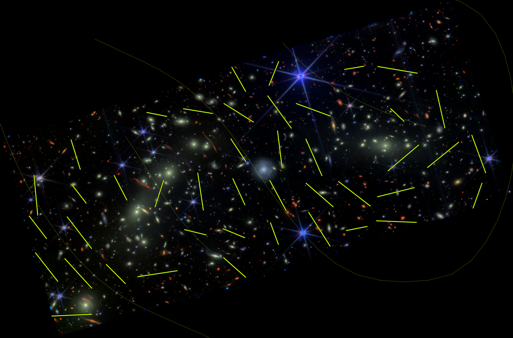
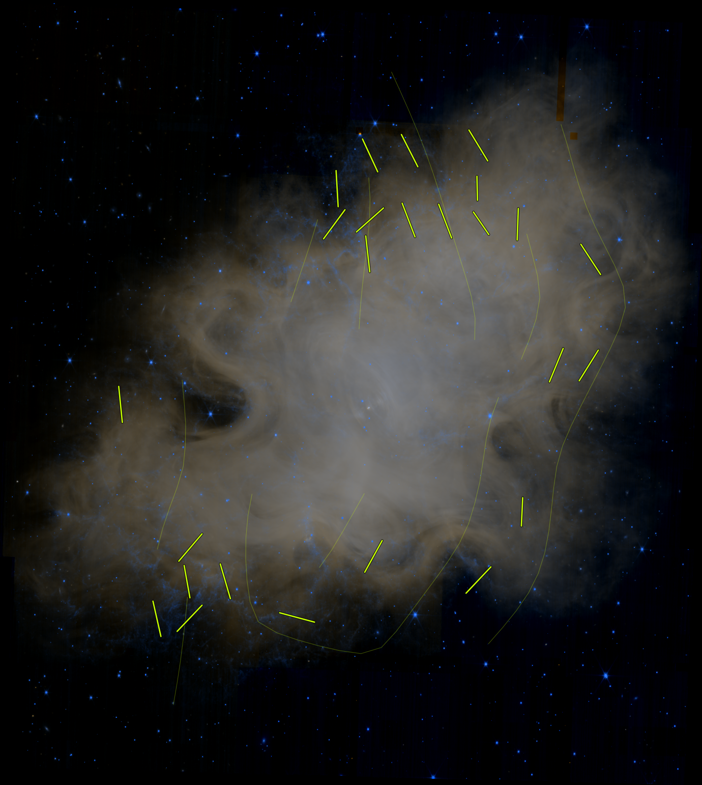
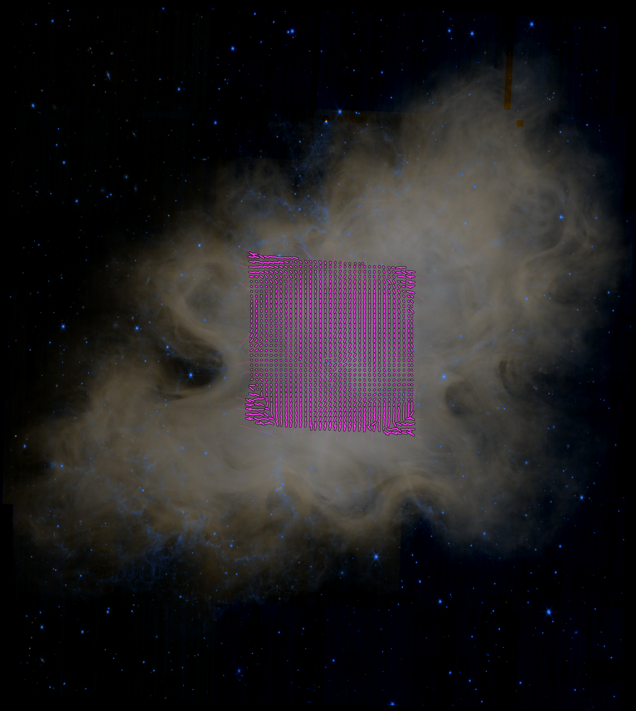
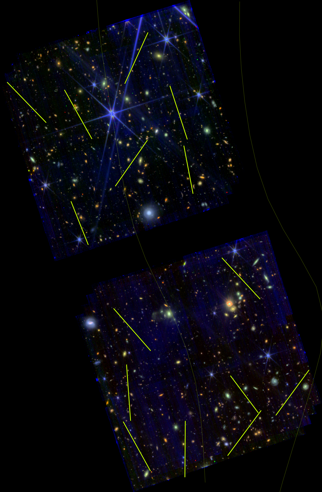
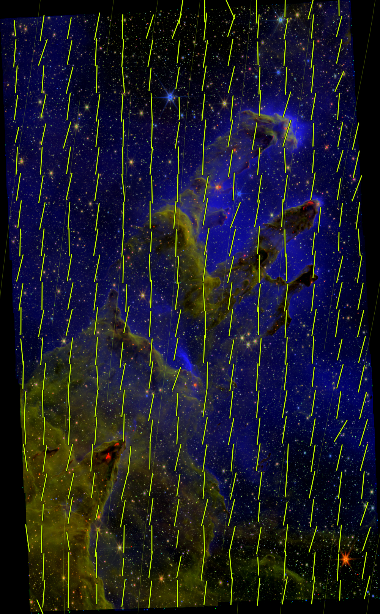

Each image is the false-colour composite with a transparent overlay: sticks are the field direction (length = amplitude), faint lines behind them are the field lines. Lime = shear, magenta = polarization; both have a dark halo so they read on any background. Where a panel has no image, the reason is the caption: no real data was invented. The gallery (gallery.html) has the same overlays as selectable layers on both raw and false-colour images.




